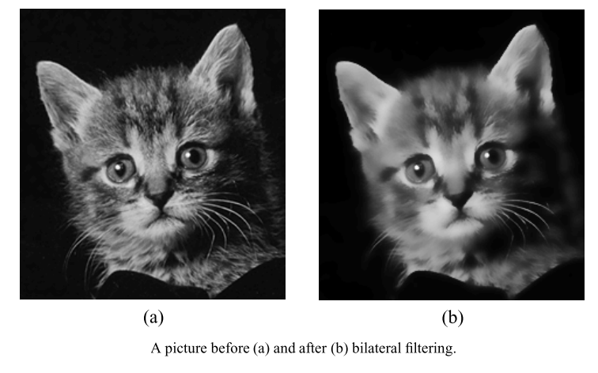
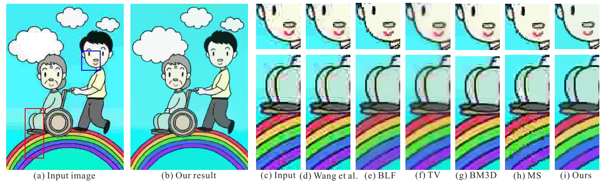
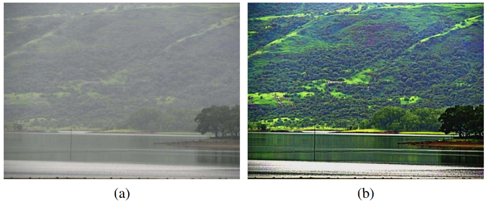
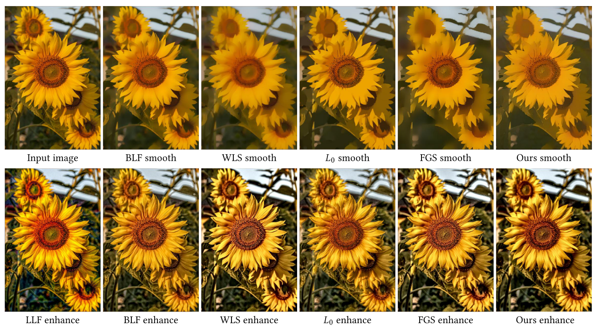
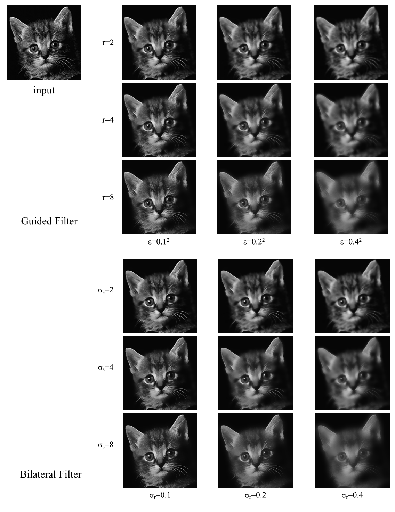
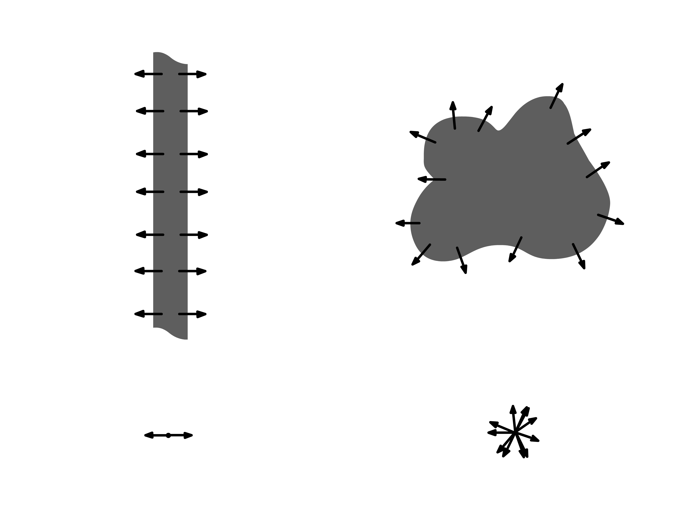
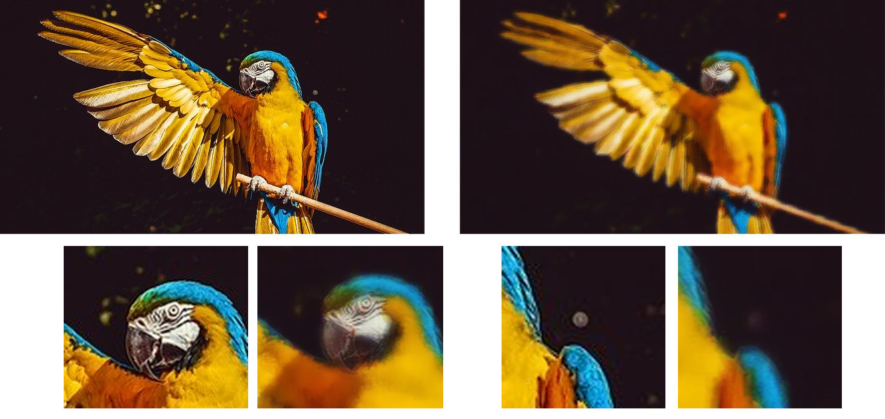

Image smoothing task is considered to be fundamental image processing task, but it's not exclusively "image" task. There exists for example dataset smoothing in statistics, which generalizes the concept of smoothing images to smoothing datasets. However, the task is similar – to capture general pattern in data. If we would try to formulate the task of image smoothing more precisely, we would say that we are trying to construct the new image in such way that we preserve general pattern and leave the noise and small perturbations out. How do we approach this task if we talk about digital image smoothing?
Why do we need image smoothing?
Or it can be said the other way: what are the applications of
smoothing algorithms? That's an interesting question, that is usually putted away by authors of
articles. I would put it this way: edge-preserving smoothing gives the image some particular
properties. What types of tasks these properties could be useful for? Algorithms can provide
image abstraction (only significant objects remain) and smooth some noise, outliers and artifacts.
So I've tried to make a list of image smoothing applications. It is sure incomplete, but this is
my view of problem. If you have some additions or simply feedback, please let me know by
email.
Image enchancement and visual effects
Smoothing is extensively used for image enchancement task and for creating different visual effects. The tasks itself can vary from smoothing noise and compression artifacts to edge enchancement and detail magnification. Removing noise sounds natural for image smoothing algorithms, but they are usually not specialized in those types of tasks. This is actually could be the case, when algorithms for image smoothing wouldn't do so well on noise as it expected to, or as good as specialized noise removal algorithms. Noise removal algorithms have usually analogous principles, but they have different goals. The goal is to remove noise and preserve image as it was before the noise was added with as much detail as possible. We have a lot of specialized approaches for this type of tasks, but still can address them in some way. However, if we talk about compression artifacts, some works show [4] that smoothing algorithms can be successfully used for successfully removing clipart compression artifacts.
The example of removing compression artifacts from clipart [4]
We can also attribute image dehazing to this category. The task of dehazing is in removing fog from photos to achieve more pleasant view. Here is the example of applying dehazing algorithm that is based on bilateral filter. 
Image before and after dehazing from [9]
When we are smoothing the image, we obtain another one where details were removed. Hence, if we know what part of the image belongs to small details, we know what we should enchance. An ideal smoothing algorithm for the task of details magnification should neither blur nor over-sharpen the salient image structures, as either operation can lead to “ringing” artifacts in the residual image, resulting in halo or gradient reversals in the detail-enhanced images [5].
The example of detail magnification done with various algorithms. Comparison from [5]
Image segmentation
Image segmentation is another example of the field where properties of smoothed images could be
useful. In work [6] authors show the synthesis of edge-preserving smoothing and image
segmentation algorithm. They use properties of the smoothed image to segment it more effectively.
Their approach uses contours, but that kind of approaches are sensitive to inhomohenous structures
on the image and tend to perform poorly. To address this drawback, they used total variation based
smoothing approach.
Here we have another example of using algorithms
to simplify image before trying to find segments on it
[7]. Fernand Meyer uses special algorithm that is based on filters also called levelings.
This is specialized image smoothing approach (as also in [6]) but the idea of usage is the same.
Edges extraction
This field should be mentioned in section above because all principles that can be applied to segmentation, can be also applied to the task of edges extraction. Let's see the effect of smoothing with the following example from my recent article devoted to image smoothing algorithm that is based on gradient analysis [8].

Images and corresponding edges before and after applying our smoothing algorithm. (Edges were extracted with Canny edge detector)
Different approaches
Approaches to image smoothing task can be divided into two distinct categories: explicit and implicit ones. I encountered this quite common and natural way of categorization first in the article [2]. It isn’t universal and widespread in the form in which I would use it, but in different reviews different authors use similar categorizations with minor deviations.
So what are the explicit and implicit methods in image smoothing? Explicit methods are based around some explicit rule of calculating pixel values of new image. They are usually non-iterative and are formulated usually as weighed sum of values in pixel’s neighborhood.
\( S(p) = \sum_{q \in N(p)} \limits w(p, q) I(q) \)
Where \(p\) is certain pixel of output image \(S\) and input image \(I\), \(q\) is a pixel of neighborhood \(N\) of pixel \(p\) and \(w(p, q)\) is weight of the specific filter. Weights of filter should satisfy some additional conditions. Their sum should be equal to one and in general they should be positive.
Implicit methods are based on some optimization problem. I would consider algorithms that are based on deep learning as implicit too. However the majority of algorithms are usually formulated as a problem of optimization of function that looks like this:
\( E(S) = E_d(S, I) + \lambda E_\nu (S) \)
Where \(E_d\) is data term, which measures the difference between images \(I\) and \(S\), \(E_\nu\) is smoothing term, which is responsible for making color variability smaller and \(\lambda\) is the coefficient for balancing this two terms.
So we have different types of algorithms. Which one is better? It depends on your goals, when
you are trying to smooth the image. Explicit algorithms are usually faster, or have fast
implementations [3], but implicit ones can usually provide better smoothing. However, the
choice between types must be based on the goal of smoothing.
Here are some examples of images smoothed by both types of algorithms:
Results of bilateral filter [1]. It belongs to explicit category of methods.

Results from [4], where L0 gradient minimization is used. It is definitely implicit approach in our classification.
Explicit approaches
In this section I'm going to describe approaches that are explicit. I'm going to show fundamental algorithms and some new approaches from recent works.
Bilateral filter [1]
We definitely should start from this filter if we talk about image smoothing in general and
explicit algorithms in specific. It is fundamental and serves as a baseline for other approaches.
Results of this algorithm are present in almost every new image smoothing article.
The idea behind it is simple and works just fine with almost all of the cases.
Because we're dealing with explicit method,
to define it we need to define the rule, by which its weights are computed. We can verbally
formulate the rule as follows:
the closest and the most similar pixels in the neighborhood have the biggest
weights and vice versa.
Mathematically it would look like:
\( W_{BLF_{pq}} = exp(\frac{-|| p - q ||^2}{2 \sigma^2_s })exp(\frac{-| I_p - I_q |^2}{2 \sigma^2_r }) \)
Where \( W_{BLF_{pq}} \) - is the weight of pixel \(q\) in the neighborhood of pixel \(p\), \(|| p - q ||^2\) - is referred to as squared euclidean distance from pixel \(p\) to \(q\) and \(I_p\) (or \(I_q\)) is the intensity value of \(p\) (\(q\)). We can see that the functions of distance and intensity are the Gaussians with parameters \(\sigma_s\) and \(\sigma_r\). It means that bilateral filter is based on Gaussian filter, but its weights are adaptive and take in consideration the difference in intensity values and the distance between central pixel and given pixel from neighborhood. These properties allow bilateral filter to be the baseline approach in the field of smoothing from its birth in 1998.We can't start talking about bilateral filter while avoiding the topic of its computational complexity. Naive implementation of it gives unsatisfactory results - we have very computationally complex problem, but in the case of bilateral filter, we have a lot of improvements and approximations of it, which attest logarithmic [10] or even constant [11] complexity.
Guided filter [2]
After some time, in 2013 image processing world met new smoothing algorithm called guided filter. Its idea is in using help of the guidance image to calculate weights. The rule of calculating the weights is given below. It was fomulated under the assumption of local linear model between the guidance and filtering output.
\(W_{GIF_{pq}} = \frac{1}{|\omega|^2} \sum_{(p,q) \in \omega_k} \limits (1 + \frac{(I_p - \mu_k)(I_q - \mu_k)}{\sigma_k^2 + \epsilon}) \)
Where \(\mu_k\) is mean intensity in neighborhood \(\omega_k\) of pixel \(p\). \(\epsilon\) is the parameter that allows to regulate the level of smoothing. The effect of \(\epsilon\) in the guided filter is similar with the range variance \(\sigma^2_r\) in the bilateral filter. Both parameters determine what is an edge that should be preserved [2].The formula of guided filter is based on the solving of optimization problem. What's interesting, that results of guided filter is pretty close to the results of guided filter. Similarity was measured by the PSNR metric [12].
PSNR is the metric that usually used for measuring similarity between two images in the task of noise removing. It measures how in process of noise removing structure of the image wasn't damaged, but here it was used in unusual way. Resulting images of bilateral and guided filter under similar parameters were compared. PSNR showed the values between 37 and 40 db. Images are considered to be almost not recognizable, when PSNR is greater than 40db, since the difference is often visually insensitive. Let's look at the results by ourselves and try to tell the difference. 
Filter based on gradient analysis [8]
This approach on the contrary is from the recent paper, from 2020. It uses information about boundaries that are contained in image gradient field. In particular, this approach discriminates between two kinds of boundaries - regular and irregular ones. It is trying to preserve the first kind of boundaries, assuming that the second one represents a texture or a noise. The difference between regular and irregular boundaries and their gradient fields can be spotted on the following picture.  Here is regular boundary on the left. It has low deviations of gradient angles, unlike the other boundary type. It has high deviations. However, how do filter measures deviations of gradient angles in order to dicern between these types? Let's look at filter's formula to see it.
\(W_{FGA_{pq}}=\frac{\cos(2(\nu_p - \nu_q)) + 1}{\alpha}\)
Deviations measured as cosine of the doubled difference between angle of center pixel \(\nu_p\) and angle of pixel in its neighborhood \(\nu_q\). When we measure angles of gradients we obtain values between \(-\pi/2\) and \(\pi/2\). Doubled differences between angles of two gradients are distributed between \(-2\pi\) and \(2\pi\). We need to double differences to treat angles with difference near \(\pi\) like similar ones, because they appear to be the parts of one boundary, as we saw on the picture with boundary types.The weights are also divided by the value \(\alpha\) that was left unmentioned. \(\alpha\) is the gradient magnitude or simply - length. Bigger the gradient length, bigger the intesity change, smaller the weight would be. Let's finally look at the results.  We can see how discrimination between boundaries works on the right pair of images. White fragment was smoothed, while figure boundary is still visible.
Implicit approaches
This category of methods is mainly based on building an optimization problem to achieve image smoothing. However, these days there is emerging interest in posing it as a machine learning problem. In section about types of approaches we already saw how this problem usually formulated.
\( E(S) = E_d(S, I) + \lambda E_\nu (S) \)
This is quite a popular formulation, but it can be modified by adding new components, etc. There's emerging interest in this field recently along with the same process in using neural networks to address smoothing problem.L0 gradient minimization [4]
The main achievement of L0 gradient minimization approach is a method of confining the number of nonzero gradients and smoothing in global manner. The function to optimize is similar to that one that was described before, but smoothing term is the number of the gradients which amplitude is not equal to zero.
\( C(S) = \#\{p||f_p-f_{p+1} \neq 0|\} \)
\( \#\{\bullet\} \) is the operator of counting objects for which the condition in parentheses is true and \(p\) is the index of pixel in neighborhood.The problem of optimizing that function is non-trivial. It contains two terms that describe respectively local and global image features. Authors found out that gradient descent or similar traditional algorithms are not suitable. Due to these difficulties authors created their own solver.

Here are the results in comparison with other methods on synthetic data. You could see other results on the natural image above.
You can see how this method generates strong edges and nearly constant inner areas of objects. It would made the task of segmentation much easier.
Deep filtering network [14]
The last approach in this short review is Deep Filtering Network.
The method is based on encoding the distinction
between textures and structures in the deep neural network.
Serious impediment with setting this problem as a machine learning one is adifficulty of
dataset generation. Manual annotation of existing images is complex and time consuming, so authors generated their own
dataset of images combining pure texture images with pure
structure images. They have found out that cartoon images appear to be the ones that have only
structures, so they have been used in generation process.
First, natural textures were extracted from images with only textures.
Then, spatial deformation was applied to them and
color was varied. Obtained textures were blended in to cartoon images.
Architecture of the network is builded as follows:
image structure is obtained by Structure Prediction Network
(SPN), similarly with texture and Texture Prediction
Network (TPN). Their output becomes an input for Texture
and Structure Aware Filtering Network (TSAFN). All
networks are mainly based on convolutional layers.
Proposed method outperforms non-learning ones in visual quality of results when compared on generated dataset.
But this is very specific approach by itself. It distinguishes between textures and structures by means of high-level
information that was obtained as the output of neural network. It means that its results could look unusual in a way
that we don't expect from smoothing algorithm. It could remove textures even if it forms strong color changes. I can
illustrate this with th following picture.
 Here we can see the results of other filters and the result of deep filtering network (the last image). Here's an example
of what I posit before: network "extracted" textures from images in unusual way. It is interesting behavior and
there hopefully would be more research of it.
Here we can see the results of other filters and the result of deep filtering network (the last image). Here's an example
of what I posit before: network "extracted" textures from images in unusual way. It is interesting behavior and
there hopefully would be more research of it.
Conclusion
In this post, we described the task of image smoothing. We found out that it is fundamental low-level image processing operation, reviewed possible applications of image smoothing and several interesting methods that could be used in image processing practice.Here we used the classification of methods that divides them into two categories: explicit and implicit. Explicit methods are easy to understand and compute, but they usually don't achieve the same level of smoothing as implicit methods that are in turn require more computations and more difficult to implement.
However, the research in this field wasn't stopped and image smoothing methods are still evolving and improving. And so we are looking forward for new algorithms in this field!